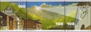

メニュー画面に戻る
メニュー画面に戻る
 画像を見る
画像を見る
 ショッピングカートを利用する
ショッピングカートを利用する
ＳＮ161「聖マルチンの穴からの光」
LIST 2012/04
＜略号＞
BK=切手帳、S/S=小型シート、(シ)=シール式、CEPT=「EUROPA」シリーズ、□=無目打
( )内の数字は、種類の数
全体に取り消し線のあるものは、売り切れです。(2018.04.17)
品番のみに取り消し線があるものは、入荷待ちです。
青文字の品番は、再入荷（在庫僅）です。
★ 恐れ入りますが1000円未満のご注文はお受けできません ★
当店の価格はすべて【税込】です。
| 品番 | 品名 | 単価 |
|---|---|---|
| ＳＮ １ | 国連 国旗とコイン24種 S/S(3) | 3350 |
| ＳＮ ２ | アメリカ 女神、旗２連ＢＫ (3) （シ） | 4800 |
| ＳＮ ３ | アメリカ 女神、旗 ＢＫから２連 (3) （シ） | 480 |
| ＳＮ ４ | アメリカ ニューメキシコ州 (1) （シ） | 80 |
| ＳＮ ５ | アメリカ アリゾナ州 (1) （シ） | 80 |
| ＳＮ ６ | アメリカ 盆栽 両面20枚 ＢＫ（シ） | 1600 |
| ＳＮ ７ | アメリカ 盆栽 両面ＢＫから(5) （シ） | 425 |
| ＳＮ ９ | アメリカ ＬＯＶＥ (1) （シ） | 80 |
| ＳＮ１０ | アメリカ 心臓病予防 (1) （シ） | 80 |
| ＳＮ１１ | アメリカ 喜劇スター ダニー・トマス(1) （シ） | 80 |
| ＳＮ１２ | アメリカ 黒人実業家 ジョンソン(1) （シ） | 80 |
| ＳＮ１３ | アメリカ 中国新年 辰 (1) （シ） | 80 |
| ＳＮ１４ | アメリカ 普通 ウェディングケーキ(1) （シ） | 110 |
| ＳＮ１６ | アメリカ 普通 働く犬 (4) （シ） | 440 |
| ＳＮ１７ | アメリカ 普通 アロハシャツ (5) （シ） | 280 |
| ＳＮ１８ | アメリカ コイル アロハシャツ (5) （シ） | 280 |
| ＳＮ１９ | アメリカ コイル 風見鶏 (5) （シ） | 390 |
| ＳＮ２０ | アメリカ コイル ワシ色違 (6) （シ） | 280 |
| ＳＮ２１ | アメリカ 航空風景 85、105 (2) （シ） | 330 |
| ＳＮ２２ | オーランド 大型フェリー (2) | 310 |
| ＳＮ２３ | オーストリア ＣＯ2を減らそう (1) | 125 |
| ＳＮ２５ | オーストリア 近代建築 続編 （シ）ＢＫの単片 | 295 |
| ＳＮ２６ | オーストリア セモタンの芸術写真 (1) | 140 |
| ＳＮ２７ | オーストリア ウィーンオペラ人形 (1) | 140 |
| ＳＮ２８ | オーストリア 花シリーズ 続 62 (1) | 125 |
| ＳＮ２９ | オーストリア ○型 楽友協会 ミニ S/S | 180 |
| ＳＮ３０ | オーストリア アルペンクラブ150年 (1) | 125 |
| ＳＮ３１ | オーストリア 昔のスクーター (1) | 290 |
| ＳＮ３２ | オーストリア ウィーン近郊鉄道 (1) | 125 |
| ＳＮ３３ | オーストリア 高架鉄道橋160年＋タブ(1) | 140 |
| ＳＮ３４ | ボスニア（イス） 有人宇宙飛行50年 S/S | 340 |
| ＳＮ３５ | ボスニア（イス） CEPT 2011 森林 ２連 | 820 |
| ＳＮ３６ | カナダ 国際化学年 （シ）(1) | 95 |
| ＳＮ３７ | カナダ 精神の健康 募金 S/S | 230 |
| ＳＮ３８ | カナダ Ｘマス 2011 窓絵 (4) | 640 |
| ＳＮ４１ | 中国 中国銀行 (2) | 105 |
| ＳＮ４２ | 台湾 ベリー (4) | 280 |
| ＳＮ４３ | 台湾 バレンタイン ２連＋S/S | 420 |
| ＳＮ４４ | クリスマス島 サンタクロースは一休み (2) | 320 |
| ＳＮ４５ | チェコ 小型切手 保存建築 凹(1) | 80 |
| ＳＮ４６ | チェコ 切手製造史シリーズ 凹(1) | 130 |
| ＳＮ４７ | チェコ 体育協会150年 (1) | 180 |
| ＳＮ４８ | チェコ 風景、彫刻 凹(2) | 405 |
| ＳＮ４９ | チェコ アニメ巨匠トルンカ 凹(1) | 130 |
| ＳＮ５０ | チェコ 数学物理学会150年 (1) | 130 |
| ＳＮ５１ | スロバキア 小型切手 天使 凹(1) | 240 |
| ＳＮ５２ | スロバキア 作家ザボルスキー (1) | 120 |
| ＳＮ５３ | スロバキア 詩人チャプーカ (1) | 150 |
| ＳＮ５４ | デンマーク Ｘマス 漫画 （シ）(4)＋S/S | 2340 |
| ＳＮ５５ | エストニア ロシアにゆき陸軍元帥 (1) | 225 |
| ＳＮ５６ | エストニア 偉人シリーズ 続編 (2) | 180 |
| ＳＮ５７ | エストニア Ｘマス 2011 天使他 （シ）(2) | 320 |
| ＳＮ５８ | エストニア ユーロ加入 コイン （シ）(1) | 470 |
| ＳＮ５９ | エストニア 普通 ラッパ 0.58 （シ）(1) | 130 |
| ＳＮ６０ | エストニア 普通 ラッパ 0.35 （シ）(1) | 80 |
| ＳＮ６１ | フィンランド サーミ文化（シ）超珍型S/S | 660 |
| ＳＮ６２ | フィンランド 未来都市10種（シ） 特ＢＫ | 1320 |
| ＳＮ６３ | フィンランド バレンタイン 漫画６連（シ）S/S | 795 |
| ＳＮ６４ | フィンランド シェルフベック 名画(4)（シ）ＢＫ | 660 |
| ＳＮ６５ | フランス Ｇ20、Ｇ8議長国 （シ）(1) | 130 |
| ＳＮ６６ | フランス ＴＧＶ新幹線 （シ）(1) | 130 |
| ＳＮ６７ | ドイツ 普通花高額 500 リンドウ (1) | 1010 |
| ＳＮ６８ | ドイツ エルブトンネル100年 (1) | 150 |
| ＳＮ６９ | ジブラルタル 切手125年 歴代の切手 (5) | 790 |
| ＳＮ７０ | ジブラルタル CEPT 2011 滝ほか (4) | 645 |
| ＳＮ７１ | イギリス ウィンザー王朝(5)＋S/S | 1660 |
| ＳＮ７２ | イギリス ロンドン５輪小型 （シ）(4) | 750 |
| ＳＮ７３ | イギリス 女王即位50年６連 S/S | 660 |
| ＳＮ７５ | イギリス 文化人 (10) | 1100 |
| ＳＮ７６ | イギリス 農場の動物[1]羊 （シ）(6) | 660 |
| ＳＮ７７ | イギリス スコットランドのＳＬ４連S/S | 780 |
| ＳＮ７８ | イギリス コミックス (10) | 1100 |
| ＳＮ８０ | グァンジー SEPAC ほか風景 (6) | 840 |
| ＳＮ８２ | 香港 年賀 辰 12連S/S (2) | 810 |
| ＳＮ８３ | 香港 年賀 辰 絹製 S/S | 1120 |
| ＳＮ８４ | 香港 年賀 辰 金箔銀箔エンボス S/S | 2240 |
| ＳＮ８５ | 香港 バレンタイン ４連＋タブ(4) | 150 |
| ＳＮ８６ | アイスランド Ｘマス 2011 （シ）(2) | 430 |
| ＳＮ８７ | アイスランド 火の女神伝説千年 S/S | 540 |
| ＳＮ８８ | アイルランド Ｘマス 2011 （シ）(3) | 550 |
| ＳＮ８９ | アイルランド 特産の馬 (4)＋S/S | 250 |
| ＳＮ９０ | アイルランド リス、イルカ （シ）(2) | 250 |
| ＳＮ９１ | ジャージー 水車と風車 (6) | 820 |
| ＳＮ９２ | ジャージー Ｘマス 2011 飾り (6) | 920 |
| ＳＮ９３ | ジャージー 交響楽団 楽器 (6) | 980 |
| ＳＮ９４ | 韓国 メキシコ友好 クジラ たて２連 | 100 |
| ＳＮ９５ | 韓国 キャラクター[2] 10連S/S （シ） | 480 |
| ＳＮ９６ | 韓国 核安全保障サミット ２連 | 100 |
| ＳＮ９７ | 韓国 コロンビア友好 薬草 ２連 | 100 |
| ＳＮ９８ | リヒテン 切手150年 貴族(4)＋□S/S | 2130 |
| ＳＮ９９ | リヒテン CEPT 2012 (1) | 200 |
| ＳＮ１００ | リヒテン 議会と憲法150年 エンボス(2) | 345 |
| ＳＮ１０１ | リトアニア 保存木造建築 続 （シ）(3) | 90 |
| ＳＮ１０２ | リトアニア サウルの戦い775年 (1) | 160 |
| ＳＮ１０３ | リトアニア 大聖堂 (2) | 200 |
| ＳＮ１０４ | リトアニア Ｘマス 2011 (2) | 245 |
| ＳＮ１０６ | マン島 蝶 （シ）(1) | 95 |
| ＳＮ１０７ | マン島 昔の封筒 (8)＋S/S | 2050 |
| ＳＮ１０８ | マン島 エリザベス女王夫妻 S/S | 780 |
| ＳＮ１１０ | マン島 英連邦青年競技８連 S/S | 790 |
| ＳＮ１１２ | ラトビア 紋章 年号改版 (4) | 100 |
| ＳＮ１１５ | マカオ 禁煙法 (2) | 150 |
| ＳＮ１１６ | ＮＺ Ｘマス 2011 （シ）(3) | 580 |
| ＳＮ１１７ | ＮＺ領ロス 極点到達競争 (5)＋S/S | 2340 |
| ＳＮ１１８ | モルドバ 水鳥４連 S/S | 640 |
| ＳＮ１１９ | モナコ ゴルフクラブ100年 (1) | 120 |
| ＳＮ１２０ | モナコ 地球温暖化 児童画 (1) | 110 |
| ＳＮ１２１ | モナコ プリキャンセル 熱帯魚 (1) | 80 |
| ＳＮ１２２ | モナコ モナコ国際切手展 (1) | 110 |
| ＳＮ１２３ | モナコ パリ海洋博物館 凹(1) | 155 |
| ＳＮ１２４ | モナコ SEPAC 2011 (1) | 150 |
| ＳＮ１２５ | モナコ 有人宇宙飛行50年 凹(1) | 560 |
| ＳＮ１２６ | モナコ 映画監督 ジョルジュ・メリエ 凹(1) | 290 |
| ＳＮ１２７ | モナコ 作家アンリ・トロヤ 凹(1) | 485 |
| ＳＮ１２８ | モナコ ♪フランツ・リスト 凹(1) | 200 |
| ＳＮ１２９ | モナコ 作家劇作家テオフィル・ゴーチェ (1) | 355 |
| ＳＮ１３０ | モナコ アントワーヌ１世肖像画 (1) | 365 |
| ＳＮ１３１ | モナコ Ｘマス 2011 (1) | 120 |
| ＳＮ１３２ | オランダ 鳥シリーズ続編 (4) | 660 |
| ＳＮ１３３ | パプア 年賀12支動物 (6)＋S/S | 2060 |
| ＳＮ１３４ | パプア トカゲ (4)＋S/S | 1710 |
| ＳＮ１３５ | パプア 伝統ダンス (4)＋S/S | 1750 |
| ＳＮ１３６ | パプア 原住民の絵画 (4)＋S/S(2) | 3420 |
| ＳＮ１３７ | パプア 蝶 メガネアゲハ 他 (4)＋S/S | 1790 |
| ＳＮ１３８ | パプア リンカーン 大統領６連 S/S | 1050 |
| ＳＮ１３９ | パプア パイナップル (4)＋S/S | 1790 |
| ＳＮ１４０ | パプア 珊瑚礁の魚 (4)＋S/S | 1790 |
| ＳＮ１４２ | ロシア 海外放送20年 (1) | 90 |
| ＳＮ１４３ | ロシア 19世紀の帽子 (4)＋S/S | 1040 |
| ＳＮ１４４ | シンガポール 睡蓮の花 （シ）(1) | 50 |
| ＳＮ１４５ | シンガポール 蘭の花 (5) | 530 |
| ＳＮ１４６ | 南ジョージア 探検家 (8) | 2115 |
| ＳＮ１４７ | スペイン アルバラシン大聖堂 凹S/S | 730 |
| ＳＮ１４８ | スロベニア 鳥 (3)＋S/S | 585 |
| ＳＮ１４９ | スウェーデン 写真芸術５連 （シ）ＢＫ | 1380 |
| ＳＮ１５０ | スウェーデン 写真芸術５連 余白カット版（シ）ＢＫ | 1380 |
| ＳＮ１５１ | スウェーデン 写真芸術５連 別図案コイル (1) | 115 |
| ＳＮ１５２ | スウェーデン ニワトリ （シ）ＢＫ | 1380 |
| ＳＮ１５３ | スウェーデン ニワトリ （シ）ＢＫから田連 | 550 |
| ＳＮ１５４ | スウェーデン ノルデン 航空、船 S/S | 550 |
| ＳＮ１５５ | スウェーデン 釣り針の芸術 凹(3) | 805 |
| ＳＮ１５６ | スイス 花シリーズ 140、180、190(3) | 735 |
| ＳＮ１５７ | スイス ユングフラウ鉄道100年 (1) | 145 |
| ＳＮ１５８ | スイス ユングフラウ鉄道100年 10面S/S | 1400 |
| ＳＮ１５９ | スイス 聖ガルス死去1400年 (1) | 145 |
| ＳＮ１６０ | スイス 聖ガルス死去1400年 10面S/S | 1400 |
| ＳＮ１６１ | スイス 聖マルチンの穴からの光 ３連 | 430 |
| ＳＮ１６２ | スイス ビーバー （シ）(1) | 145 |
| ＳＮ１６３ | スイス 市民法100年 (1) | 145 |
| ＳＮ１６４ | スイス ブラスバンド協会150年 (1) | 145 |
| ＳＮ１６５ | スイス 児童保護100年 （シ）(1) | 220 |
| ＳＮ１６６ | スイス ヤーノシュの漫画10枚（シ）ＢＫ | 1400 |
| ＳＮ１６７ | スイス ヤーノシュの漫画 BKの単片 | 145 |
| ＳＮ１６８ | タイ バレンタイン (4) | 120 |
| ＳＮ１６９ | タイ 物品税庁80年 (1) | 30 |
| ＳＮ１７０ | タイ パキスタン友好60年 塔 (1) | 30 |
| ＳＮ１７１ | タイ 古代お守りエンボス(5)＋S/S | 630 |
| ＳＮ１７２ | タイ 新年の花火 (4)＋S/S | 230 |
| ＳＮ１７３ | タイ タイ伝統行事 (4)＋S/S | 230 |
| ＳＮ１７４ | タイ 普通切手 睡蓮の花 (1) | 30 |
| ＳＮ１７５ | タイ 年賀切手 辰 (1) | 30 |
| ＳＮ１７６ | タイ 王族の偉人 まとめて(3) | 70 |
| ＳＮ１７７ | タイ 子供の日 童話 (4) | 100 |
| ＳＮ１７８ | タイ 中国の福神 (2)＋S/S | 150 |
| ＳＮ１７９ | タイ ７角切手内に金銀貨エンボス(7) | 210 |
| ＳＮ１８０ | タイ ７角切手内に金銀貨金銀貨７種連 S/S | 420 |
| ＳＮ１８１ | タイ ７角切手内に22金箔 国王像 (1) | 600 |
| ＳＮ１８２ | タイ ７角切手内に銅貨や銀杯など S/S | 420 |
| ＳＮ１８３ | トルコ CEPT 2011 森林 (2) | 235 |
| ＳＮ１８４ | ベトナム ベトナム建築 (6) | 365 |
| ＳＮ１８５ | ウクライナ 最初の切手[2]６連 S/S | 660 |
| ＳＮ１８６ | ウクライナ 民芸品 額面改訂 (3) | 395 |
| ＳＮ１８７ | ウクライナ 民芸品 額面改訂年号改版 (6) | 250 |
| ＳＮ１８８ | ウクライナ Ｘマス 2011 童話 ２連 | 250 |
ショッピングカートを利用する 店主の『雑記帳』を開いてみる
メニュー画面に戻る
店主の『雑記帳』を開いてみる
メニュー画面に戻る